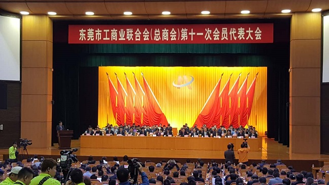

卢小周出席东莞市工商联第十一次会员代表大会

12月26日，东莞市工商业联合会（总商会）第十一次会员代表大会在东莞召开。东莞市委书记吕业升、省工商联副主席卢小周出席会议并讲话，市政协主席李小梅、市政协党组书记姚康和市人大、市政府有关领导、市直有关部门、各镇街党政负责同志，以及来自全市各镇街基层商会、行业协会、异地商会的会员代表600余人参加了会议。
会议审议通过了第十届执委会作了题为《凝聚发展力量共促两个健康，为在更高起点上实现更高水平发展努力奋斗》工作报告，通过了东莞市工商联（总商会）第十届执委会财务报告，表彰了2016年度“先进镇（街）工商联”和“先进商（协）会”，选举产生了东莞市工商联（总商会）第十一届执委会成员并颁发了证书。新当选的市工商联执委会主席（会长）莫浩棠致辞感谢市委市政府和全体会员代表的信任和厚爱，期望与大家携手努力，不负众望、不辱使命。
吕业升在会上作了讲话，他高度肯定了工商联过去五年的工作，并对工商联未来五年工作提出了殷切希望。他要求工商联认真学习宣传贯彻市第十四次党代会精神，紧扣促进“两个健康”工作主题，切实把思想和行动统一到党代会的决策部署上来，为东莞市在更高起点上实现更高水平发展更好地凝聚共识、汇聚力量。一要深化认识、凝聚共识，进一步增强做好工商联工作的责任感和使命感；二要围绕中心、服务大局，把践行“两个健康”工作主题贯彻于工商联工作始终；三要积极探索、改革创新，不断提高工商联工作科学化水平。
卢小周代表省工商联对大会的胜利召开表示热烈的祝贺，向全体与会代表和全市非公经济人士表示亲切的问候。他指出，过去五年，市工商联紧紧围绕市委、市政府的中心工作，团结带领广大会员围绕中心、服务大局，牢牢把握促进“两个健康”的工作主题，团结带领广大会员围绕中心、服务大局，做了大量有影响、有成效的工作，为东莞市经济持续健康发展发挥了积极的重要作用。
卢小周指出，当前在省委省政府的领导下，全省正围绕实现“三个定位，两个率先”的目标要求，进一步抓落实、促发展。东莞市工商联作为党和政府联系非公有制经济人士的桥梁和纽带，作为政府管理非公经济的助手，责任重大。一要大力教育引导广大非公经济人士，坚持正确的政治方向；二要进一步解放思想、创新思路，不断提高工商联服务工作水平；三要团结引导广大非公经济人士坚持义利兼顾、以义为先，不忘回报社会、回报国家；四是继续加强工商联自身建设。希望东莞各级工商联组织在党的领导下，不断开创东莞市工商联工作和非公有制经济发展的新局面。同时也希望东莞市各级党委政府和各有关部门，进一步加强对工商联工作的关心和指导。省工商联将一如既往地支持东莞市各项事业的创新发展。